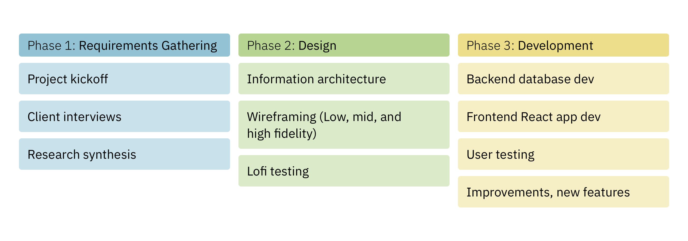
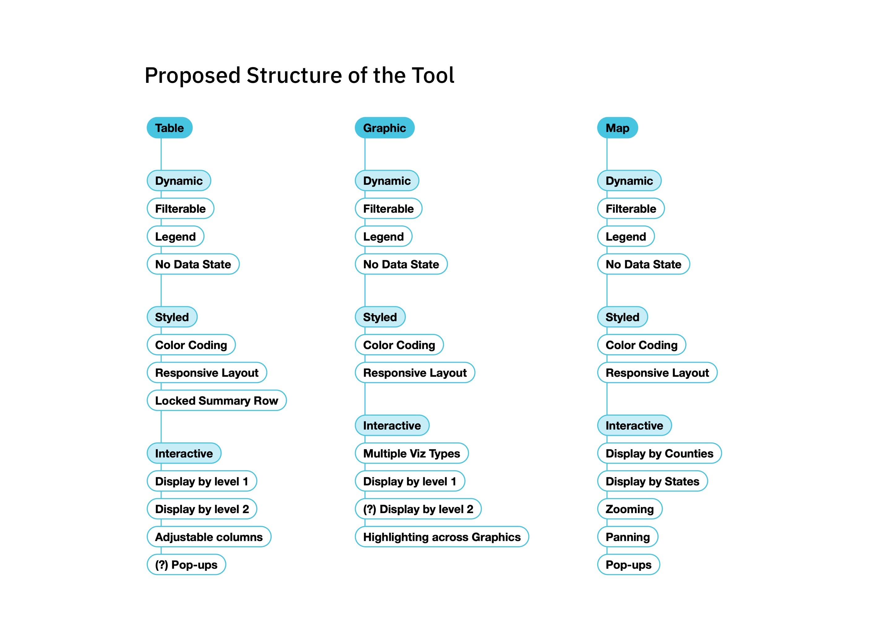
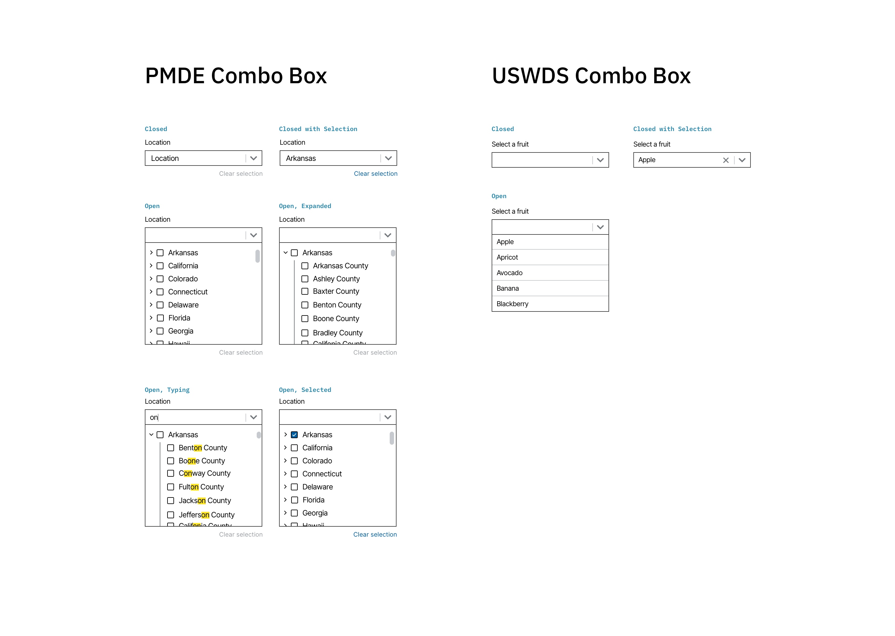
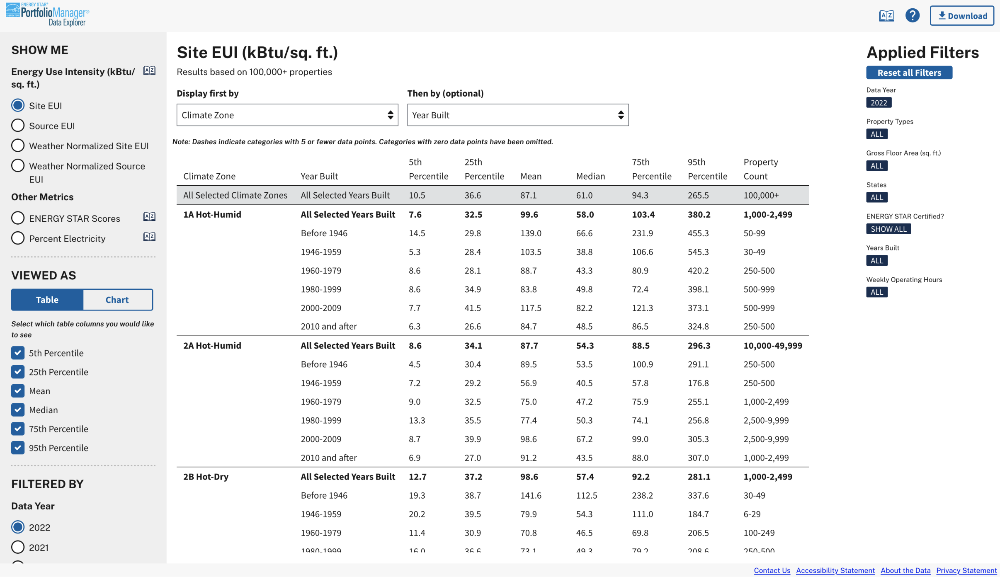
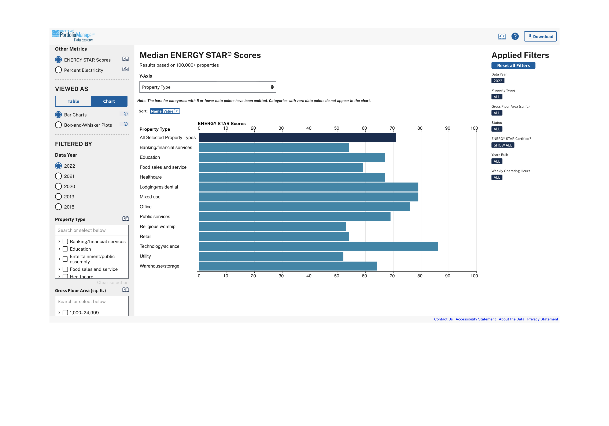

ENERGY STAR Portfolio Manager Data Explorer: A Case Study

Click the image above to visit the final site
Context
Background
ENERGY STAR is a joint energy efficiency program from the U.S. Environmental Protection Agency (EPA) and Department of Energy (DOE). Every year, thousands of commercial building owners across the United States use ENERGY STAR's Portfolio Manager tool to report and manage energy use data about their buildings, as well as details like occupancy, age, size, and more.
Problem Space
In an effort to help guide policy decisions around energy efficiency, the Portfolio Manager team wanted a tool to make this data public that was easy to use, offered a “customized” experience, and maintained buildings’ privacy.
Team and Roles
I served as task lead and head designer and worked with a data scientist, GIS expert, front- and back-end developers, and our project director.
Project Process

Phase 1: Requirements Gathering
Following a kickoff meeting, our team started the first phase of the project by collecting input from clients and colleagues to identify the tool's users and their needs. We used client interviews as proxies for more generative user research in order to avoid Paperwork Reduction Act implications as we knew we wanted to speak to users when testing the completed tool.
After synthesizing these conversations, I sketched (and sketched, and sketched...) as a way to explore which features and visualization types we wanted to include to best serve the needs of our users, making sure to craft an experience in service of the underlying data.
Key Phase 1 Questions
1
Who are the tool's main users?
2
What are the different users' needs?
3
What functionality does the tool need to have to support those needs?
Key Phase 1 Insights
1
The tool's primary users are state and local governments.
Through client interviews, we were also able to identify additional user groups: researchers, journalists, and existing Portfolio Manager users. While state and local governments remained our primary user group, it was helpful to keep in mind that others might use the tool in different ways.
2
Users need to be able to benchmark their performance.
A crucial user need that we uncovered early on was the ability to compare a jurisdiction's own performance against similar localities. We identified that the most common axes of comparison were along size/population and climate.
3
The tool needs to be anonymized, dynamic, and geographic.
Other key requirements we identified during this phase were: keeping individual property data hidden or anonymized, ensuring users could "drill down" or interact with the site in dynamic ways, and providing multiple types and levels of geographic exploration.
Phase 2: Design
In phase 2, I moved on from sketches to low fidelity wireframes. The goals with these rounds of iterations were to decide on and refine the layout of the tool, decide what features were must-haves, and begin to work with real data so we could stress test our ideas.
To that end, I collaborated with our data scientist and developers as I produced the wireframes and took them through internal and external reviews. This process allowed us to settle on layout and key features—including the filters panel—and refine our visualization choices.
To further refine the included features in service of the users' experience and to finalize the tool's overall UX, I moved on to higher levels of fidelity in our wireframes.
Key Phase 2 Questions
1
Which key features will we prioritize in the tool?
2
How do we engage the clients during the design process?
3
How do we reconcile our UX choices with an existing UI library?
Key Phase 2 Insights
1
Filtering and changing views are two separate actions.
By iterating over multiple layouts, we were able to arrive at a pair of customizability options that suited our users' needs: a filters panel to change the extent of the underlying query and options to change the "display" of the data after the data had been returned.
2
Wireframes are more than just a means to an end.
With a long-term project like this, it was important to bring the clients along with us as we moved through the phases. To do that, we used wireframes and other designed materials not only as a way to build consensus on the tool's functionality, but also as a way to communicate project milestones, progress, and setbacks. And example of this kind of artifact is presented below.
3
Design systems can be used as guardrails, not cages.
To keep the tool in line with government web standards and to maintain trust in the site, we had to use the U.S. Web Design System (USWDS) for our UI. However, there were cases where we had to expand upon existing USWDS components to accommodate our unique needs. An example of this is outlined in more detail below.
Example Phase 2 Materials

An example of a visual artifact that we used to align with clients and communicate both functionality and progress. As we designed and implemented the different areas of the tool, we returned to this diagram with the clients to show what we'd completed and what was still being developed.

An example of a component that existed in the USWDS but had to be customized for our needs. We needed to let users select multiple, nested items in the filters, so we designed our own version of the combo box.
Phase 3: Development
As I was bringing the features and functionality of the tool from low through high fidelity wireframes, our developers were hard at work creating the underlying database that would serve the tool and support the different kinds of queries a user could put together.
Once this initial backend work was finished and our developers began to connect it to the frontend and build out what woudl become the final React app based on the wireframes, I served as an informal scrum master, leading standups and sheperding JIRA tickets through our sprint process. I also led a round of user testing on an early version of the site and helped translate the findings from those sessions into updates to the tool's design.
After these final changes, we launched the site (available here: ENERGY STAR Portfolio Manager Data Explorer) and have been making continuous improvements, including adding new metrics and visualization types and optimizing the tool for mobile.
Key Phase 3 Questions
1
How can design and development effectively work together?
2
How are users interacting with the tool?
3
What are our next steps?
Key Phase 3 Insights
1
Sprints aren't just for developers.
Even though we were a small team and were all working on multiple other projects at the same time, anchoring our workflow to sprints and other agile ceremonies (and expecting everyone to participate) helped our team align on our individual tasks and helped our clients to see the overall project take shape as we progressed week by week.
2
Context setting is crucial in user testing.
When testing the site with people in local governments, our team helped orient participants by setting a specific scenario and describing the type of feedback we were looking for before asking them to complete any tasks. This helped get people in the right mindset and also helped us avoid comments on the shape of buttons or the color of bars when what we really wanted was feedback on usability.
3
Keep a backlog of ideas and improvements.
By maintaining a shared repository of features that we decided were out of scope but interesting to return to, or ideas for enhacements that we wanted to try, we were able to effectively mobilize to suggest, implement, and publish updates to the tool when new rounds of funding were made available.
The Final Site

This screenshot show an example query in data table form showing Site EUI by Climate Zone and Year Built.

This screenshot shows an example query in chart format showing ENERGY STAR scores by property type.